Peril on Monster Island 2 1/3
Indie game developed by myself over the course of 6 months during my time as an undergrad.
Unreal Development Kit, 3ds Max, Photoshop, Modo, Speedtree utilized.
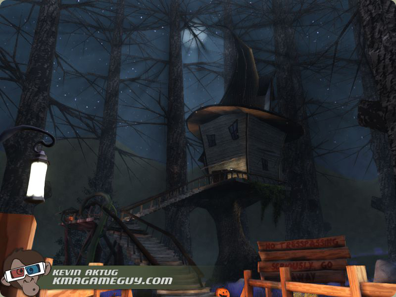
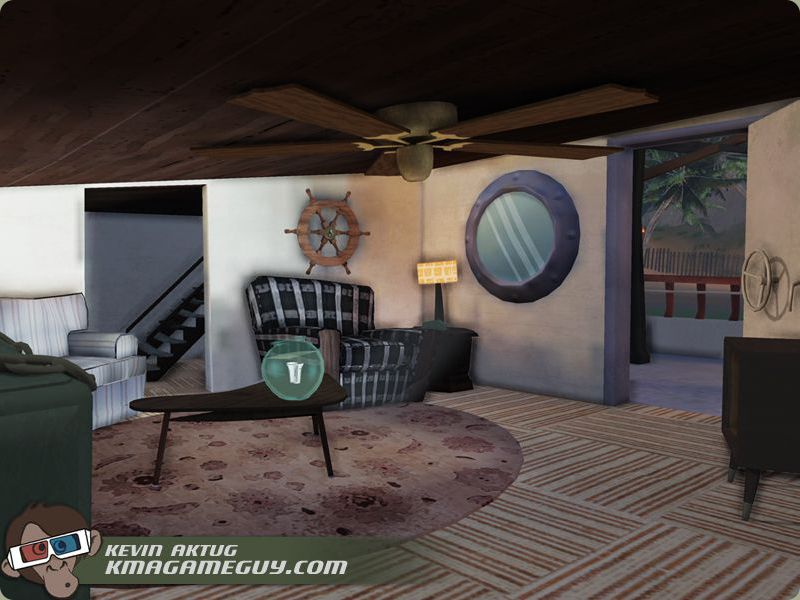
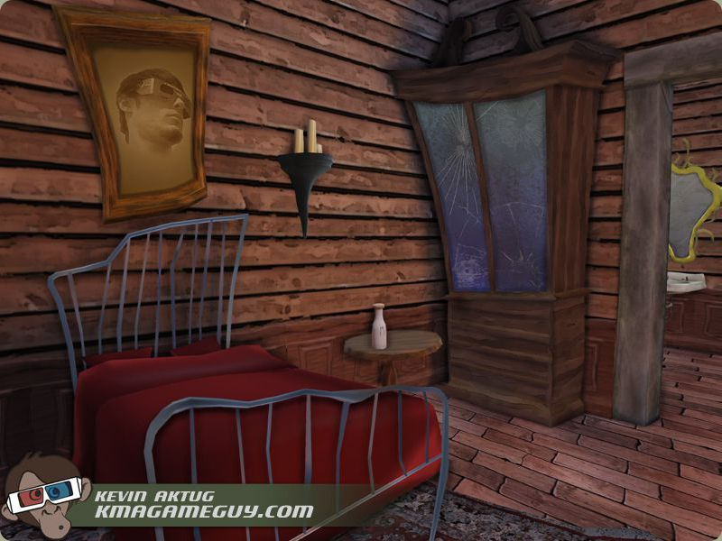
Riverboat
Detail shot of the Riverboat Environment. This is the where the player begins the game, and must create a signal fire in hopes of rescue.
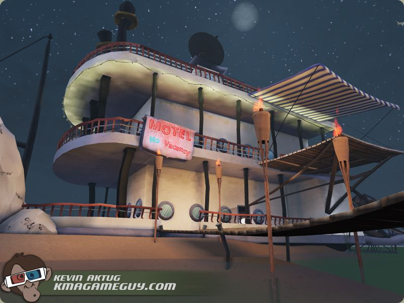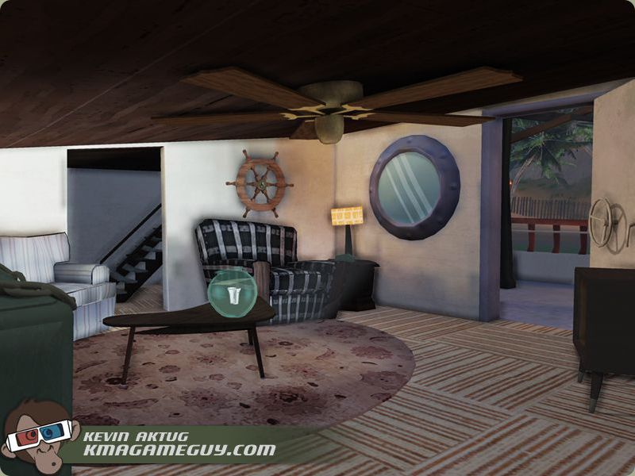
Quest Breakdown - Signal Fire
To complete the quest, the player has to find 4-5 wood planks to deploy as kindling for a signal fire. Doing so initiates a cutscene.
Each trigger adds to the quest record, and checks if the player has all the wood. If they do, then they are prompted accordingly.
If they still have collecting to do, the event and wood mesh are removed from the game to prevent the player from picking it up again.
Finally, once they've completed the quest they are rewarded with a cutscene that allows them further access to the island.
Click image for expanded view of the quest Kismet
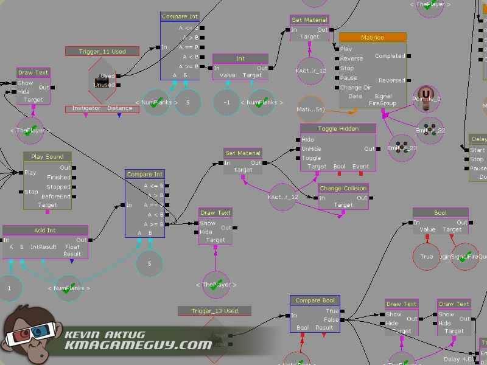Lodge
Quick view of the Lodge environment. This is where the brunt of the game's story is delivered.
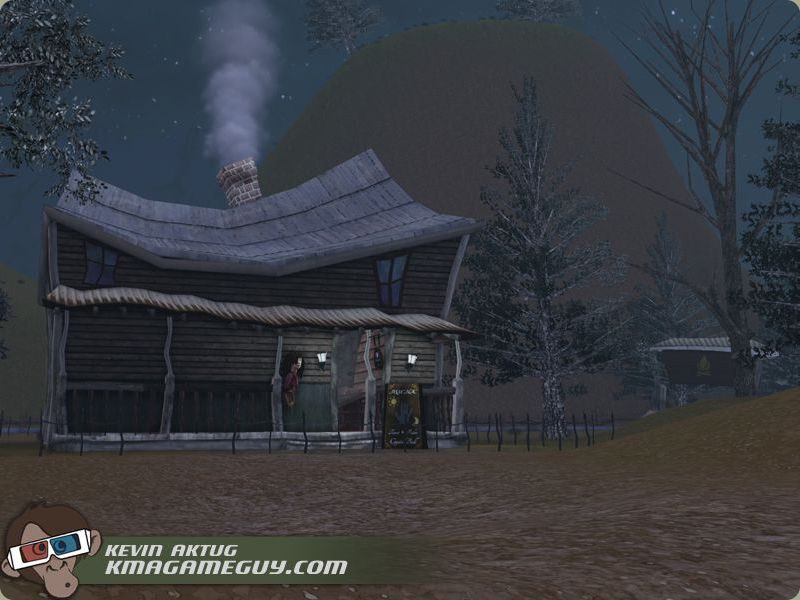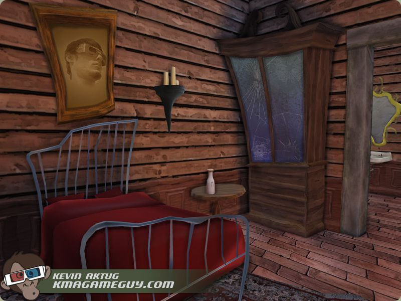
Level Management Breakdown - Transitions
One of the earliest problems I had with the UDK was figuring out a decent way to preserve game data between level transitions.
I opted to use level streaming, as I didn't have the time or knowhow to code a kismet method to serialize the game data for read/write access.
It turned out to work pretty well, so below I've included my method for transitioning the player between environments.
Because level streaming largely depends on the hardware being used to run the game, I gave it a little flair by fading the screen to black,
then overlaying a scaleform indeterminate loading screen to hide the geometry swapping and player teleportation.
Click image for expanded view of the transitions kismet
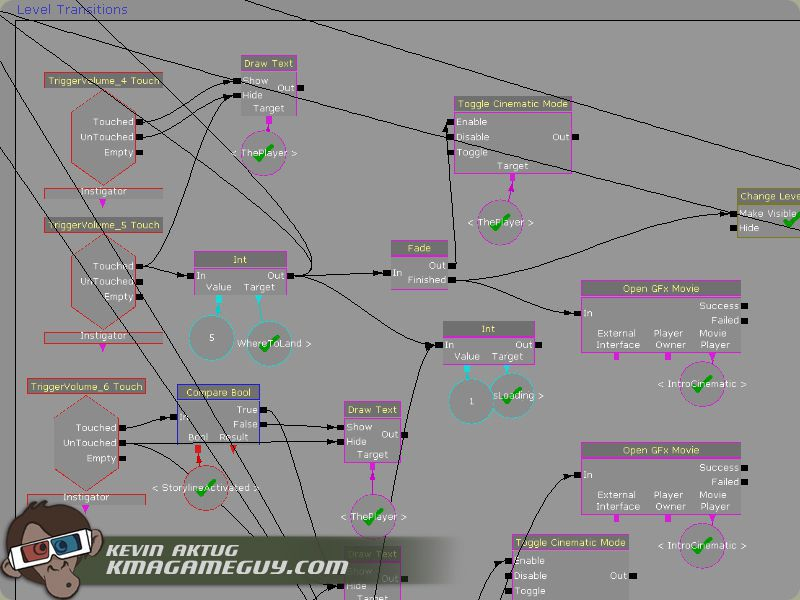Wilderness
As a bonus to the curious players, tiki tokens are hidden throughout each environment. If they're all collected, the player is rewarded
with an extended "good" ending, vs. the standard "bad" ending if the tiki's are not all collected.
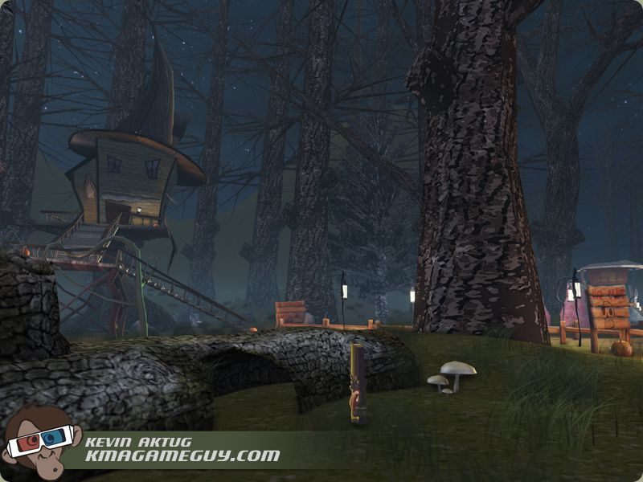Regeneration Quest Breakdown - Cinematic
I didn't want to overburden the player with text or tedious, pixel-hunt-y game mechanics, so I opted to use cinematics in these places.
I was fortunate that the Matinee feature in Kismet was so powerful - I was able to layer a lot of things like camera motion, particle FX,
shader triggers, sounds, events, etc, with ease. The regeneration cinematic was fun because it required a bunch of events to fire off just
in the right sequence. I also wanted modularity to the quests - this one in particular was one that could either be completed last, or first.
Click image for expanded view of the regeneration cinematic's matinee sequence
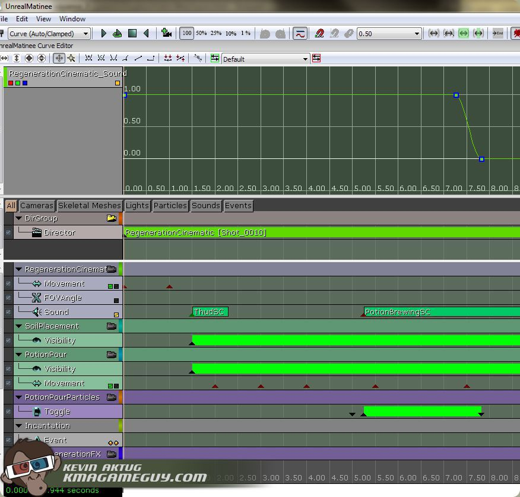Crypt
The crypt deviated from the rest of the design a bit by introducing the potential for the player to fail.
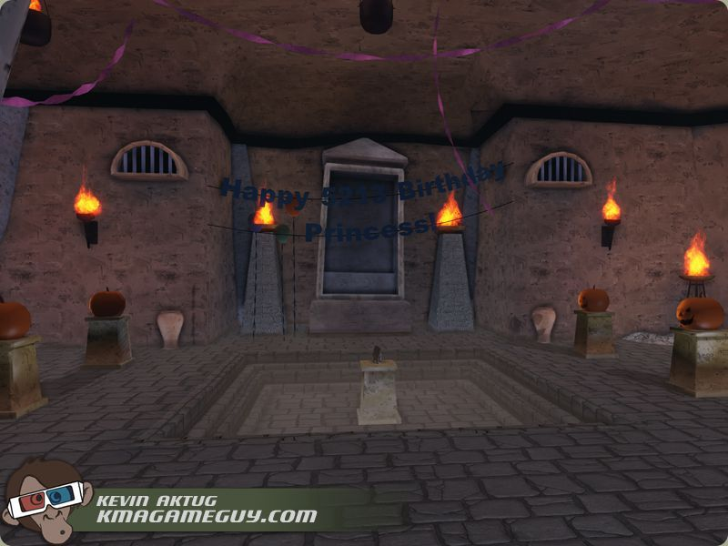Crypt Quest Breakdown - The Trap